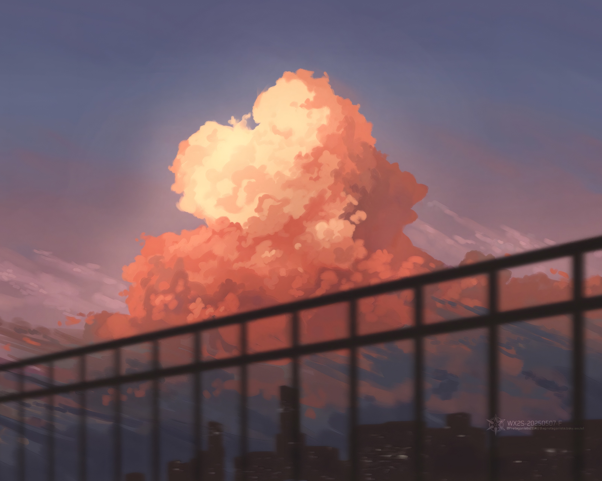

Essay · 2026 · 7 min read
"Anxiety is the dizziness of freedom."
— Søren Kierkegaard, The Concept of Anxiety
A note from the season of comparing, the silence after a letter sent, and the slow work of taking the stone back into one's own hands.
There is an hour, somewhere past midnight, when the room is too quiet and the inbox is too still. I refresh it anyway. I have refreshed it many times. The letter I sent two weeks ago has not been answered, and will not be — I understand that now, in the way one understands the weather by looking out a window. No reply is also a reply. It is the longest one, written in the smallest font.
Kierkegaard called anxiety the dizziness of freedom. I used to read the line and nod, the way one nods at things one has not yet earned. This year I have begun to read it differently. The dizziness, I think, is not a flaw in the machinery of being alive. It is the sound that freedom makes when it is asked to choose, and finds no rail to hold.
A door stands open in front of me. Behind me, four years of small decisions. Beside me, friends whose papers and prizes and quiet competences I can recite from memory. Ahead, a future that refuses to make up its mind. I had thought, when I was younger, that the hard part of growing up would be the work. The hard part, it turns out, is the standing — upright, in the open doorway, while the wind goes through.
The season of comparing
I keep a list, though I did not mean to write it. It lives somewhere behind my eyes. On the left column: what they have done. On the right: what I have done. The columns do not agree. They have never agreed, in any season, for any person who has ever kept such a list, and yet I keep returning to mine as if the next reading might be kinder.
Comparison is a strange ruler. It looks like a tool for measurement, but it measures nothing real. It places a single life — full of weather, of accidents, of hours no one watched — against the brightest sentence another life ever wrote, and asks why the two are not the same shape. The answer, of course, is that lives are not shapes. They are routes. You can no more compare them than you can compare two journeys by holding up their maps.
And yet. I am twenty-something years old and there is a gate at the end of this corridor, and the gate is narrow, and the people walking through it carry papers I do not have. I would be lying if I said the ruler did not do its work on me, some nights. The honest thing is to admit that it does, and then to set it down — gently, the way one sets down a knife — before reaching for the next hour.
The silence
About the letter. I had written it carefully. I had read three of his papers, and quoted, I thought, the right one. I had said what I wanted, and what I could offer, and how little I needed in return. I had pressed send at a time of day chosen for the time zone of his inbox, not mine.
And then — nothing. Not a no. Not a polite line. A silence so complete that for a while I mistook it for something that was still about to arrive. I refreshed. I drafted a follow-up I did not send. I drafted a second follow-up. I read, on the internet, the unwritten rules about how long one waits before understanding. I waited longer than the rules said. Then I understood.
What I want to say, to the version of me still sitting at that desk: a silence is not a verdict. A silence is a silence. The professor did not weigh your life and find it light; he opened an inbox crowded with the lives of strangers, and closed it again, and went to lunch. The story you are writing in your head, in which you are the protagonist of his Tuesday, is fiction. Generous fiction, even — it grants him a thoroughness he never offered.
The hardest thing about an unanswered letter is not the absence of the answer. It is the temptation to write the answer yourself, in the worst possible handwriting, and then to believe it.
What I think the dizziness is for
I have begun to suspect that anxiety, when it is honest, is not the enemy of a meaningful life. It is the tax one pays for caring about anything that has not yet happened. A person who feels none of it is either at perfect rest or paying no attention. Neither describes me. Neither, I suspect, describes you.
If the dizziness is the sound of freedom, then the work is not to silence it but to learn to stand inside it. To notice that the door is open, that no one is forcing me through, that the choices are mine and have always been mine, and that this — the having of choices, the trembling at the threshold — is itself the privilege I was working toward.
The first essay on this page ended with a field, and a sky, and the belief that meaning lives in the experiencing rather than the arriving. I still believe that. What I want to add, a year and a season later, is this: the experiencing includes the trembling. The wind in the doorway is part of the room. The hour at the inbox is part of the life. The friends who outpaced me on paper are walking their own corridors, in their own weathers, toward gates I will never see.
The stone, again
Camus gave Sisyphus a boulder, and asked him to be happy with it. I have begun to think that the deeper instruction was not about the pushing but about the owning. The stone has to be yours. If it is someone else's stone — a stone you picked up because the person beside you was carrying one like it, a stone shaped by a ranking, a stone you cannot remember choosing — then no amount of pushing will make the hill feel like yours.
So I have been doing a quieter accounting. Not the column of what they have, against the column of what I have. A different page. What did I make this year that I would have made even if no one was watching? What did I learn because the learning itself was the point? Which hours, looked back on, do I recognise as mine? Those hours, it turns out, are not few. They are simply the ones I have been forgetting to count.
The letter will stay unanswered. There will be other letters. Some will be answered and some will not, and the ones that are not will hurt for a week and then become the wallpaper of a season I have already left. The gate at the end of the corridor will open, or it will not, and either way I will keep walking — because the walking, I am slowly learning, is the thing.
Anxiety is the dizziness of freedom.
And freedom, even when it makes me dizzy, is still the better of the two words.